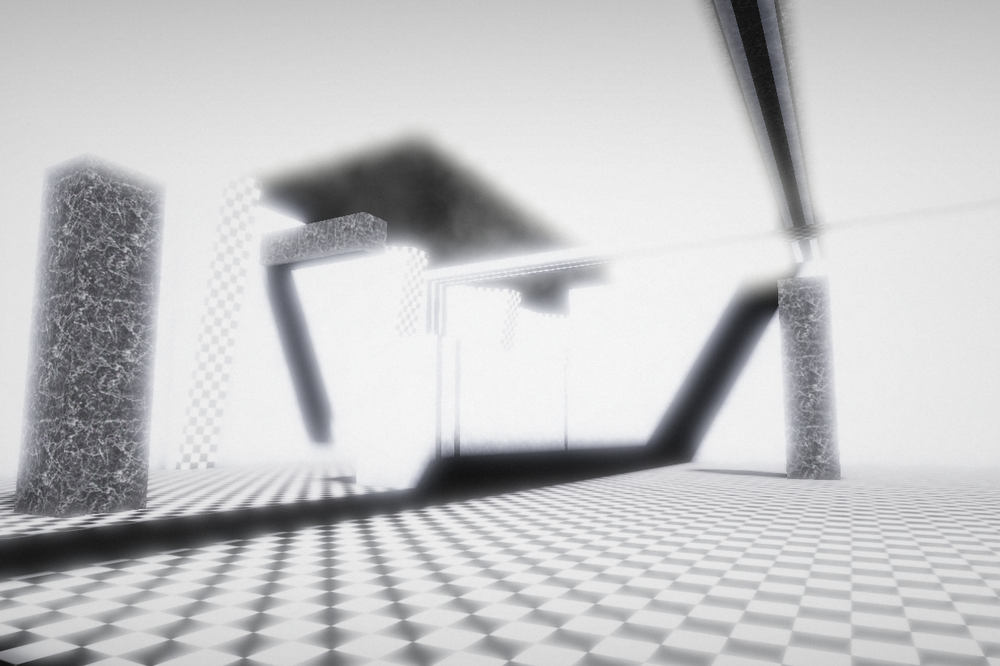

Description
Level ???.1, also referred to as "Olympus", is a bright, peaceful space consisting of marble walls and floors arranged in a checkered pattern. The environment is open and clean, with tall towers visible from a great distance. A gentle wind blows high above, never reaching the ground.
Resources
This level contains no resources of any kind. Survivors should ensure they have enough supplies before entering.
Threats
- Other Survivors: While hostile individuals could be encountered, the peaceful nature of Olympus makes violence unlikely.
- Entities: A rare white entity has been sighted here, though little is known about it.
Exits
- One large noclip exit is located directly at the spawn point of Olympus.
Additional Notes
Olympus is among the safest known levels, but its intense brightness can cause mild disorientation or headaches over prolonged exposure.
Audios
-
Standard ambient:
olympus.m4a
